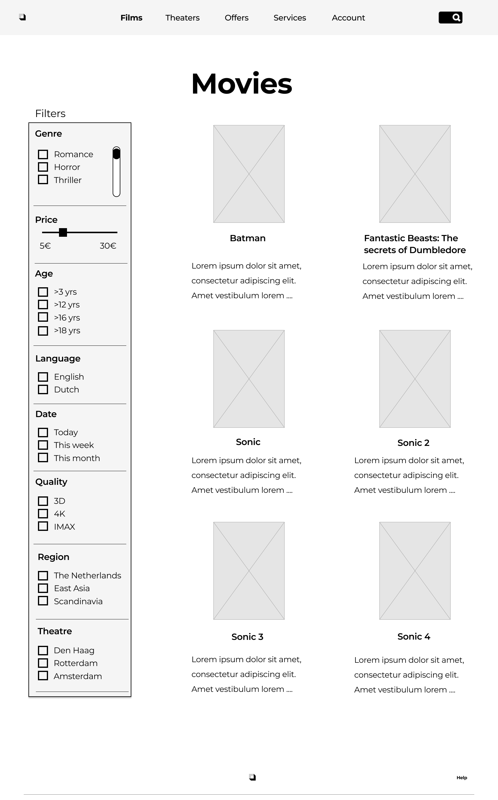
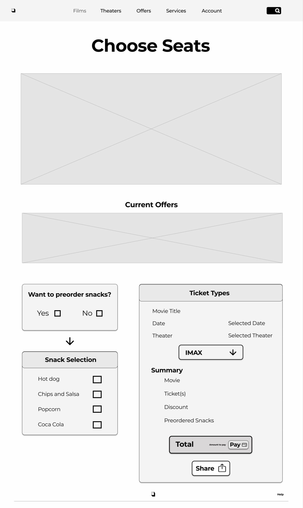
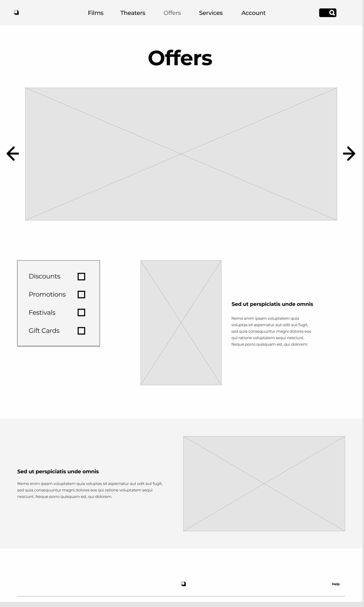

Cinema Website Design
Skills:
- Interface design
- Wireframing
- Service Design
- Business Strategy
- User stories
- User Testing
Software:
- Figma
- Miro
- Balsamiq
Team:
- 3 students
Timeline:
- 2 weeks


Goal
The assignment was to design a website for a cinema chain, that appeals to the target audience of "digital natives" - young people that grew up with the internet; as well as accommodates business goals, such as encouraging people to visit the cinema in groups.
Process
1. Empathize/define
The first step was to generate many user stories for our target audience, in order to understand our user’s needs better. We then picked a few user needs that we found the most important to focus on, such as saving money, finding movies and planning visits quickly and going out with groups (friends/families).
2. Ideate
After focusing on user needs, and translating those into design objectives, it was time to combine those with the business goals and ideate. Using diverging and converging techniques, such as brainwriting and affinity diagrams, we ended up with a compilation of the most important aspects and features for the design of the website.
3. Design
Using flowcharts, wireframes and card sorting with users from the target audience, created a first iteration that focuses on a clear navigation and efficient flow, and integrates the defined user needs and business goals.
4. Prototype
Subsequent iterations that were improved with user walkthroughs were created as fully navigable wireframes in Figma.
Result
A fully navigable Figma prototype, which is easy and efficient to navigate for the target audience.
- Home page that features current showings and upcoming premieres
- Comprehensive filters for finding a movie to go to
- Offers page going over all the current promotions
- Ticket purchasing flow, that incorporoates features for group visits, movie overviews and upselling opportunities
  
You can check out the working prototype for yourself here.
What I learned
- To translate business goals and user needs into a user centered system structure that facilitates a fluent user - system interaction.
- Gained more experience in working in a team of designers.
- To efficiently communicate my designs to stakeholders and teammates.
- The importance of prototyping early, which helps ideation and testing